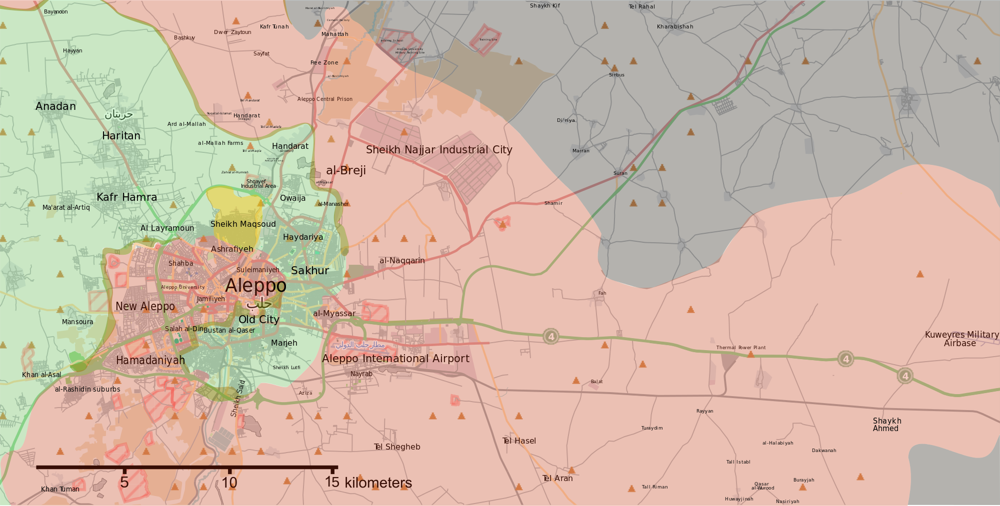
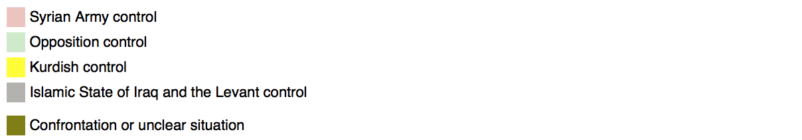

Areas of Control
 Situation in Aleppo as of April, 2016. (Map Source: Wikimapia)
Brief
The conventions of war normalise a collection of tactics, politics, and effects on the urban condition. Closed borders, bombing sorties, military advances, shifting boundaries of territorial control, demographic displacement, targeting of citizens and vital infrastructure; all inform the customary descriptions of conflict, its reporting, visualization, analysis, and public assimilation. Normal reporting of the war has not, however, extended to the urban scale of the streets of Aleppo; a scale as consequential as any other in a complex conflict interwoven into the fabric of the city. Perhaps no theater in the Syrian Civil War can validate the significance of intra-urban warfare as much as Aleppo - Syria’s largest city - currently the scene of an embedded conflict between Syrian Rebels, Government Forces, and the Kurdish Militia. Aleppo’s importance in the conflict is decisive, as Aris Roussinos states, “He who controls Aleppo shall control Syria and define the outcome of the war”.
1
While regime forces engage in a formal military campaign against rebel-held areas of the city, the battle of Aleppo is being dictated by the small-scale tactical capacity of the rebel forces.
2
In opposition to to Bashir Al-Assad’s forces, the Free Syrian Army, the Islamic Front, and ISIS, among others, have increasingly advanced their territorial control and political influence in the city, in spite of military disadvantages and decreasing financial support.3
The spatial strategies to achieve this, while largely overlooked and understudied, have been decisive in the developments of the conflict.The Islamic Front is the strongest rebel-force in the opposition with marked influence in what remains of city’s civic life. It has become an active actor in the shaping of Aleppo’s urban fabric; through micro-urban interventions – selective demolition, preservation, adaptation, and ad-hoc patching and construction - the rebel group is taking part in the redrafting of a city. These conflict-driven interventions are misleadingly reported as callous erasure. And while erasure remains a leading operation from either side, the calculated transformation of the urban fabric is part of a process of rebuilding through the conflict that precedes any foreseeable conclusion to the war.
While public ignorance of these intra-urban realities owes much to the impossibility of establishing a safe journalistic presence within Syria, a glimpse of these conditions has been disclosed by raw footage from Syrian nationals and combatants, as well as a few successful reporting ventures.
4
In September 2014, Vice News published a video report of a two-week stay in the war-torn city.5
Hosted by members of the Islamic Front, the journalists documented not only the predictable extent of Aleppo’s physical destruction, but much that cannot be seen in satellite imagery and drone footage: Ghosts of Aleppo (Trailer)
6
See full length movie here.Virtually depopulated, the city’s built environment has been effectively hijacked by all parties and turned into what Aris Roussinos describes, with levity and accuracy on equal measure, as a playground of war.
7
Snapshot Report
The violent and accelerated pace of available ground footage leaves us, at best, with a dissonant portrait of the urban conditions in the Old City.
Left: “HD POV GoPro Helmet Cam CQB Footage From Aleppo” (Source: War Leaks in Youtube)
Top Right: “Huge Explosion Rocks Carlton Hotel in Aleppo” (Source: Plasternews in Youtube)
Bottom Right: “War in Syria 2015 - Combat Footage From Aleppo” (Source: War Clashes in Youtube)
Bottom Left: “Syria War - Mustafa Martyrs Brigade in Urban Combat Firefight against SAA in Aleppo” (Source: War Clashes in Youtube)
However, by combining the multiple instances of spatial interventions made by rebel groups, it is possible to dissect a single frame of day-to-day Aleppo. Purposefully imprecise, this portrait of the city is far from a forensic analysis, but rather a descriptive resource meant to render a composite image of the combined micro-urban efforts, their relative spatial relations, and the common architectural settings in which they are performed.


Download Snapshot Report
Like a single picture composed of stitched images, this urban section couples distinct viewports to render a cohesive depiction of the conflict at its most consequential scale, simultaneously mitigating the sensory chaos of first-person footage and the abstraction of satellite imagery. Looking west, the drawing reveals the southeastern part of the Citadel (the urban theater right in the center of the Battle for Aleppo) and it unstable spatial demarcations. To the southeast, the areas controlled by the opposition, to the northwest (including the Citadel) the regime-held areas, and in the interstice, the contested positions.
One spatial condition that diminishes the Syrian Army’s military superiority is precisely the compressed nature of these demarcations, as the use of heavy firepower (barrel bombs, guided missiles, chemical gases, etc.) against the insurgency right at the edge of the frontline risks friendly casualties for the regime. For that reason, it has been reported that regime bombing sorties of opposition-held areas is cleared only beyond a 300-500m offset from contested positions; paradoxically making the frontline one of the “safest” areas of the city. A benefit for the opposition, the proximity of these demarcations has allowed them to strategically effect significant transgressions, most significantly in the shape of underground tunnels that extend their offensive capabilities. From 2014 onwards, the Islamic Front has engineered tunnels up to half a kilometer below regime-held areas in order to place explosives right under the foundation of occupied buildings. This tactic has reportedly led to dozens of Syrian Arab Army casualties.
On the other side of the battlefront, the opposition-held positions far from the frontline have also been the site of various spatial strategies designed to support governance, welfare, and civic life. Quasi-governmental institutions like courts, communal kitchens, hospitals, police headquarters, and public archives, have been relocated to nondescript –and sometimes secret, locations, as the existing institutional buildings have been systemically targeted and decimated by the regime.
Produced by Javier Bidot-Betancourt, for the Conflict Urbanism: Aleppo seminar at Columbia University during Spring 2016. See all student work here.